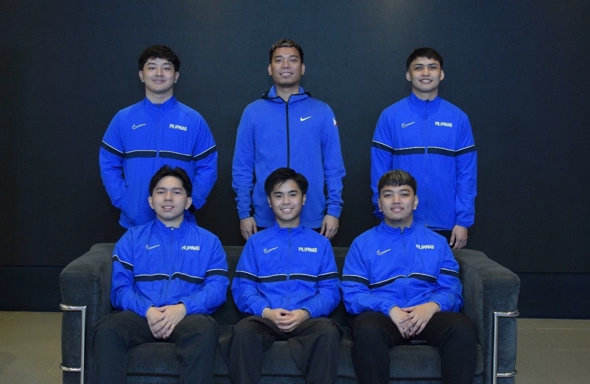
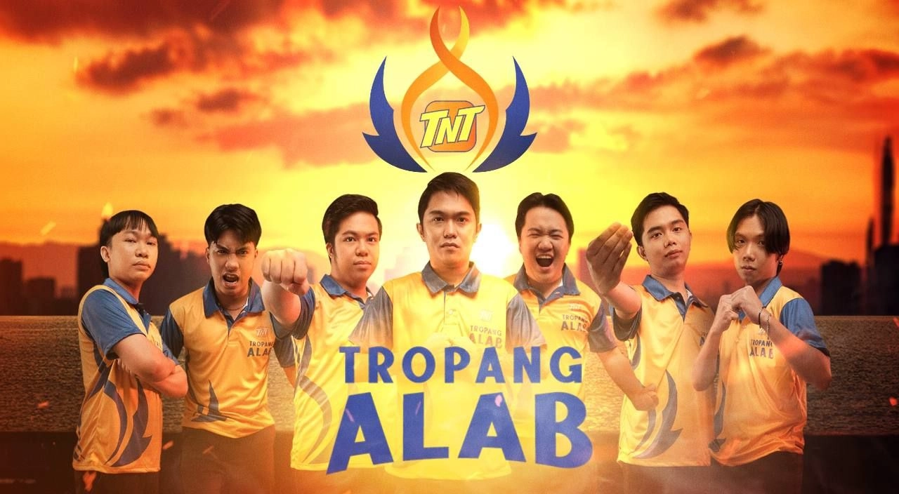
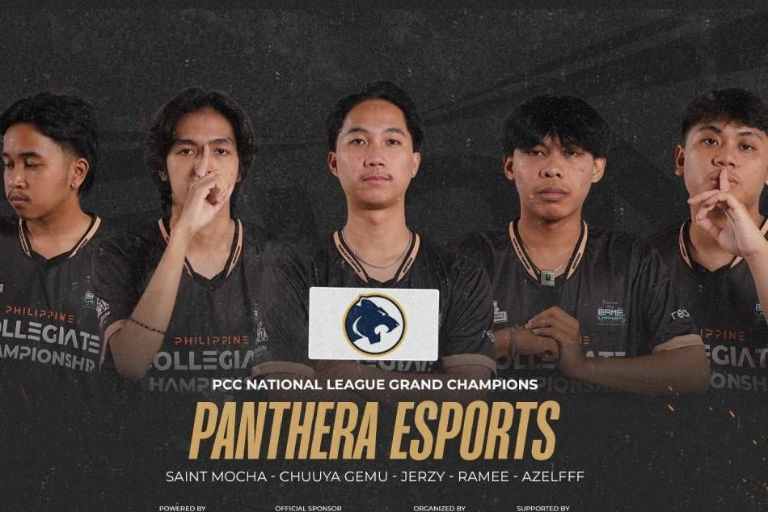
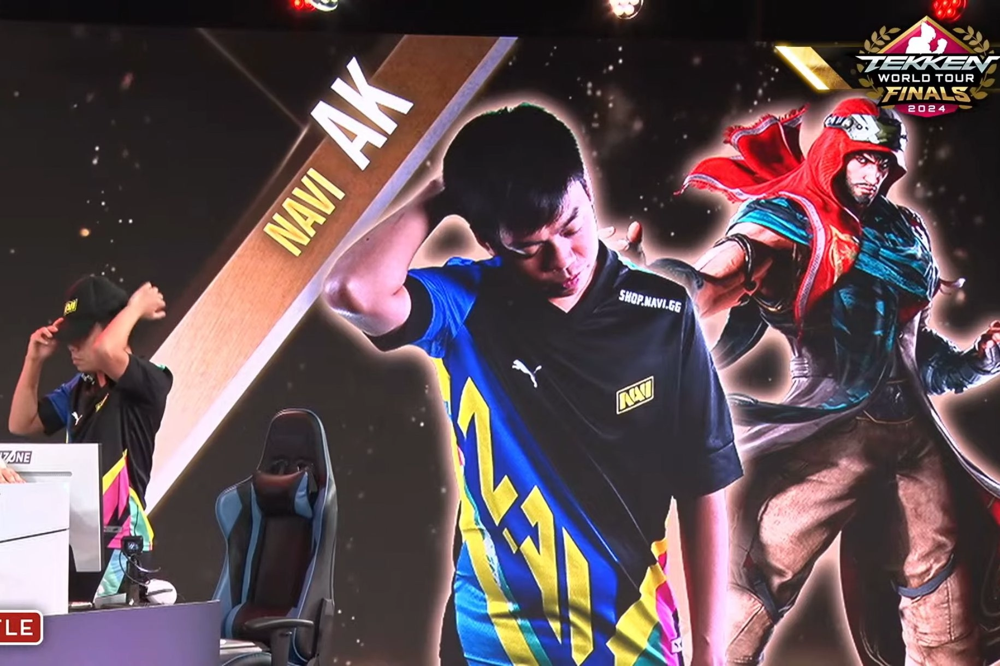
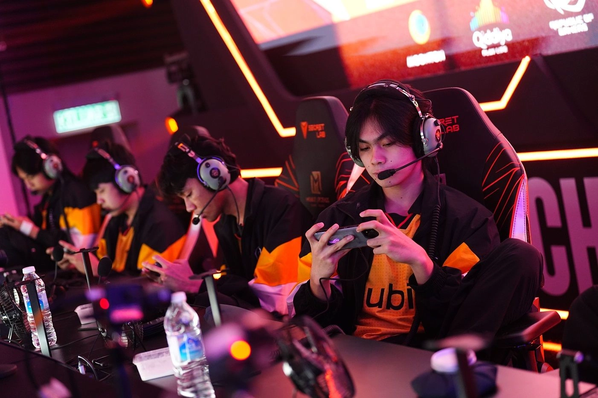

SBP: All systems go for eFIBA World Finals in Clark
Published Dec 10, 2024 07:51 PM PHT

MANILA, Philippines -- The stage is set, the teams are ready, and the world will be watching as the Philippines hosts the eFIBA World Finals on December 11 and 12 at the SMX Convention Center in Clark, Pampanga.
Eight teams qualified through Regional Championships in eFIBA Season 3 and these squads have been divided into two groups. Group A has the USA, Algeria, Portugal, and Saudi Arabia while Group B will feature Brazil, New Zealand, Turkiye, and the Philippines.
READ: Philippines to host eFIBA Season 3 World Finals
“Esports has seen a massive rise in popularity in the past few years and FIBA wanted to grow the sport of basketball not just on the court but in that field as well,” said Samahang Basketbol ng Pilipinas Executive Director Erika Dy.
READ: Ateneo's Medina rules NBA2K24 leg of UAAP Esports
“The SBP is fully committed to FIBA in this endeavor and that is the reason why we’re hosting the eFIBA World Finals in Clark. The SBP’s ability in hosting world-class events is proven and we’re hopeful the World Finals will be added to the long list of successful FIBA events we’ve had in the Philippines.”
public is invited to witness the event, as admission is free.
To further heat the event, the SBP is also hosting a 1v1 Showdown that is open to all 2K Gamers.
READ: NBA 2K25, which features Gilas jersey, launched in PH
“We’re inviting everyone to support the eFIBA World Finals and our very own eGilas Pilipinas as they take on the world’s best at the SMX Convention Center,” added Dy.
“We appreciate the consistent support from Smart in all of the SBP events, including the World Finals and we’ve also partnered with the Laus Group to give our eGilas the best shot at winning. We’re banking on the help of the hometown crowd to help them out.”
TNT launches pro esports team 'Tropang Alab'
Published Dec 10, 2024 06:54 PM PHT

MANILA, Philippines – TNT has officially launched its professional esports team, named Tropang Alab, set to compete in the Honor of Kings (HOK) local qualifiers happening on December 13 to 15 and 20 to 22.
Their immediate goal is to qualify for the upcoming HOK Invitational Season 3.
The TNT Tropang Alab are composed of Midlaner Carlito Ribo a former M2 World Champ in MLBB, (In-Game Name: Ribo); Clash Laner Carl Jioseppe Lacsam (IGN: Calm); Jungler Mark Clinton Pelayo (IGN: Fate); Farm Laner John Christian (IGN: Jaycee); Roamers Ronnel Tan (IGN: Stronger) and Charles Richard Orlain (IGN: Yato); and team coach Jemvic Pingol (IGN: Mori).
"With Honor of Kings growing in popularity, TNT is proud to support the esports landscape by introducing Tropang Alab, showcasing our commitment to the gaming community, and empowering Filipino talent to shine globally," said Lloyd R. Manaloto, TNT Group Head.
A force to reckon with, Tropang Alab have a string of HOK tournament victories under their belt as the champions of Rumble Royale (September 2024), Kings Ordeal Southeast Asia (October 2024), Blacklist Initiation (November 2024), and realme Regional Wars South Luzon (November 2024).
Tropang Alab look forward to leveling up their teamwork and gameplay as one of the invited teams in the local qualifiers for the upcoming Honor of Kings Invitational Season 3, set to take place in the first quarter of 2025 in the Philippines.
"We warmly welcome Tropang Alab into our growing tropa. More than showcasing their fiery passion and skill, the team embodies the camaraderie and brotherhood that define TNT. True to their name, Tropang Alab will ignite the spirit of gamers everywhere and prove that Filipinos have what it takes to succeed and dominate in HOK, powered by TNT," Manaloto added.
"Isang karangalan para sa amin na officially ma-represent ang TNT, na laging naniniwala sa talento at galing ng Filipino mobile gamers. Sana ay makapagbigay kami ng saya at inspirasyon sa mga gamers sa pamamagitan ng pagpapakita ng aming skills at determinasyon sa esports journey namin," said TNT Tropang Alab Head Coach Jemvic Pingol.
Panthera Esports crowned PCC National League Champ
Published Dec 10, 2024 06:18 PM PHT

MANILA, Philippines – Panthera Esports thumped NU Bulldogs with a 3-1 victory in the Mobile Legends: Bang Bang (MLBB) grand finals to cap a dominant run and claim the Philippine Collegiate Championship National League Season 2 crown on Sunday, December 1 at the Victoria Sports Tower in Quezon City.
Hardly breaking a sweat through the national finals, the quintet of MVP Syrell “Chuuya Gemu” Rabara, Christian “Ramee” Tiglao, Charles Ryan “Saint Mocha” Robianes, Jerzy “Jerzy” Esguerra, and Jehoram Kish “Azelff” Espinosa did not even drop a single game in the round robin stage and semifinals before proving to be on a class of its own in the finale against the Bulldogs.
READ: Intense MLBB action anticipated at Philippine Collegiate Championship Grand Finals
Panthera of Systems Plus College Foundation scored the first two games of the series, with gold laner Azelff taking on the starring role with clean performances on the Beatrix and Moskov picks.
He tallied a neat 5-0-4 KDA in Panthera’s wire-to-wire 14-6 Game 1 win while he notched an equally impressive 2-0-9 line on the Moskov as he spearheaded the team’s comeback 13-12 win Game 2 to take a commanding 2-0 series lead.
The Bulldogs bit hard and retaliated in Game 3 as gold laner Krutz gave NU its first win in the series behind a top lane split push while the rest of the players figured in a messy 14th-minute Lord dance.
Panthera, however, would not be denied as it finally took care of business with an 11-7 Game 4 win to bag the title as well as the top prize of P100,000.
Panthera Esports went through the needle eye, qualifying for the National League Finals after finishing in the top two of the Luzon qualifier. It then topped Group B with a perfect 4-0 record in National League Finals first phase before it swept DHVSU Honorians 2-0 to punch its ticket to the grand finals.
Tekken World Tour Global Finals: AK goes deep in LCQ, loses in semifinals
Published Dec 08, 2024 03:32 PM PHT

Despite another hard-fought journey through the Last Chance Qualifiers, Pinoy Tekken prodigy Alexandre "AK" Laverez ended his campaign in the Tekken World Tour 2024 Global Finals after falling in the lower bracket semifinals.
READ: AK falls in group stage, to continue run in Last Chance Qualifier
During the 2023 LCQ, the last edition of the tournament playing Tekken 7, AK reached the grand finals but lost in a bracket reset to USA's Joe "JoeCrush" Olveda.
Only the grand finals winner of the LCQ moved on to the top sixteen at the time, while this year the two players who reached the grand finals proceeds to the top sixteen.
After losing in the top eight winners bracket against South Korea's Lee "EDGE" Ju-hyung of T1, AK dropped Team Vitality's Jeon "JeonDDing" Sang-hyun in the losers' quarterfinals before conceding to Kwandong Freecs' Han "Mulgold" Jae-gyun in the semifinals.
Prior to the top 8, the Shaheen main bested more than five hundred contenders in the LCQ consistently in the winners' side of the brackets and defeating notable players such as Karmine Corp's Kim "JDCR" Hyun-jin, DRX's Park "Infested" Byung-ho, and TeamYAMASA's Daichi "Nobi" Nakayama.
In a Facebook post, AK thanked those who supported him throughout the LCQ. "Salamat sa dami ng pusong binigay nyo, 4th out of 576 players tayo."
2024 was still a good year for AK, placing high in the global leaderboard prior to the global finals thanks to his performance in Combo Breaker and a new sponsorship with Natus Vincere.
Fnatic ONIC PH nails first test in Knockout Stage, dominates SRG
Published Dec 07, 2024 06:06 PM PHT

Fnatic ONIC Philippines flexed its might as the Pinoy squad passed its first test in the Knockout Stage of the M6 World Championship.
The Super Family on Saturday nailed a convincing victory over 2024 MSC champions Selangor Red Giants (SRG) on their home soil, 2-0, in Kuala Lumpur, Malaysia.
Gold laner Duane "Kelra" Pillas did the work, gaining match MVP honors in back-to-back matches--notably in the pivotal Game 2, where he notched a clean 11/0/6 performance on his Granger while dealing 74.7K damage on 998 GPM.
READ: M6 World Championship: Fnatic ONIC PH outsmarts CFU Gaming
Asked about the pressure of being the Philippines remaining hope of retaining the M-series crown, Kelra said they are staying at the moment, taking things one game at a time.
READ: M6: Kelra's Layla makes waves as Fnatic ONIC PH books spot to Knockout Stages
"Sa pressure, 'di naman kami nape-pressure kasi kumbaga, one game at a time lang talaga kami. Hindi namin iniisip 'yung ibang tao. Focus lang kami sa sarili namin," Kelra said.
ONIC will be continuing its run in the upper bracket. They will battle Burmese esports organization Falcon Esports next, set for tomorrow, December 8.
Watch more on iWantTFC.com. Watch hundreds of Pinoy shows, movies, live sports and news.